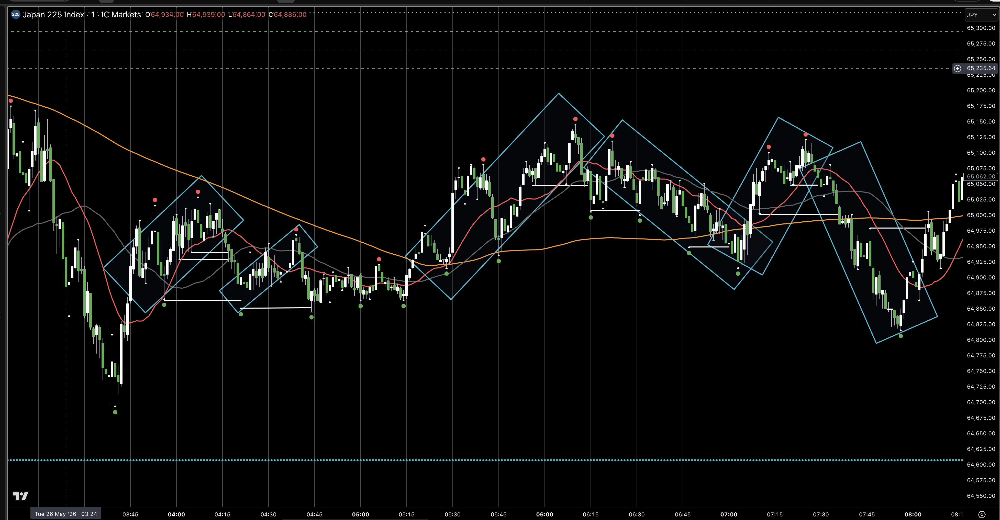
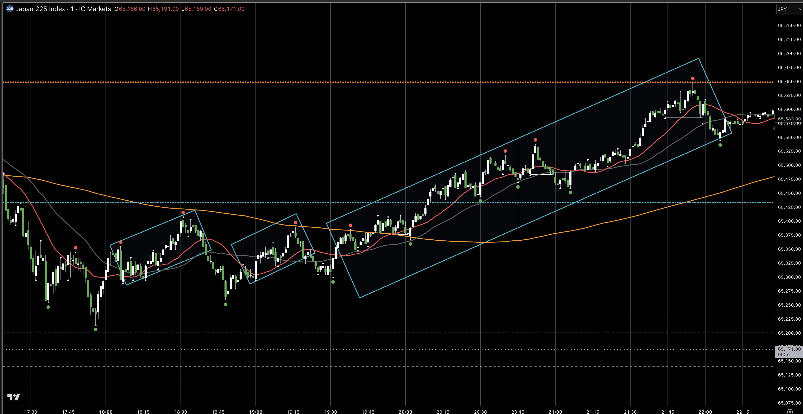

Project Overview
Our current backtesting dashboard will be used to develop a profitable algorithmic trading strategy. Python handles research and backtesting; the final strategy is exported as C# for live trading with cTrader.
Liquidity Engeneering Model
The strategy that we're starting to develop should be built around a Liquidity Engeneering Model framework, which is described in detail below.
Time Frames
- Lower Time Frame (trade entry) - 1m (LTF)
- Higher Time Frame (trade confluence) - 1h (HTF)
Trend Direction Filter
- 200 EMA
- 40 EMA
- 20 EMA
- Trend Confirmation Measurement - If there is 20 < 40 for longer than 10 minutes (10 candles)
Fractal Indicators
- 1 minute Fractals - 1m chart fractals (white dots on the chart image below)
- 5 minute Fractals - 5m chart fractals displayed on the 1m chart (red dots on the chart image below)
Project Terminology Acronyms
- HTF - Higher Time Frame - Typically refers to the 1h time frame
- LTF - Lower Time Frame - Typically refers to the 1m time frame
- PA - Price Action
- PP - Fractals a.k.a Pivot Points
- FPP - (Forward Pivot Points) Market has pushed forward and decicively pulled back enough for a PP to print on the chart.
- PBPP - (Pull Back Pivot Points) Market has pulled back and then decisively resumed trending causeing a clear PP to print on the chart.
Liquidity Engineering Model
Methodology
- The market has 2 priorities: 1. Induce liquidity (get retail traders to place stops at obvious levels) 2. Sweep liquidity (move price through those levels to fill institutional orders).
- Traders are provided 2 components that must exist to incuce trading liquidity: 1. A reason to enter (micro trend moving in a clear direction) 2. A place to exit (clear, sensible stop loss levels - recent swing points).
- Specificly placed levels (patterns) are created to induce liquidity to be placed at predictable levels, and later those specific levels are 'breached' to capure the liquidity.
- It's extremely simple and cant be fundamentally done in a more complex way - feign one direction and then move in an opposite direction.
- This pattern is particularly consistent on the one-minute chart. Most retail traders are going to gravitate to the 1-minute chart, to make quick money in the least amount of time, and will place their stop losses tightly and predictably.
- The pattern identified has a genuine structural basis. It's not statistical pattern matching, it's a description of market microstructure mechanics. Liquidity has to exist for large orders to be filled. Retail traders predictably place stops at obvious swing points. The market therefore predictably sweeps those levels before reversing. That's not a coincidence or a pattern that disappears — it's a mechanical feature of how markets clear large orders.
Liquidity Induction
The induction pattern is simple and clear so that the maximum number of traders can see it and react to it.
- Price moves in a micro trend with a clearly visable direction.
- The clarity of the trend is underlied with higher high and higher low (and vice versa) pivot points. There are sharp, decisive, clear, reversals in direction. There are clear pushes forward, clear pull backs, and clear pull back reversals / trend continuation.
- Typically a micro trend has at least 3 swing legs, creating 3 pivot points in the wake of the trend. For a pattern to emerge, something must occur at least twice, therefore, the third leg a is particularly inducing component.
Liquidity Sweep
- At some point after the liquidity has been sufficiently induced, the price pulls back past the PBPP and sweeps those and predictable levels.
- A sweep typically happens after only 3 legs in order to capture the liquidity levels at their most full point before they dissipate from profit taking.
- In consolidation the price can sweep back and forth repeatedly over micro trends within the range. In a trend the price can continue after the sweep. In a higher time frame movement, when the price is going for HTF level sweeps, the market is not concerned with the LTF PP and proceeds without sweeping them.
Inducement Patterns and Sweeps
In the following chart images the inducement patterns are indicated with the blue boxes. Each blue box represents an inducement pattern that all share the same qualities:
- 1 - A clear short term direction.
- 2 - A number of pivot points (tpically 3 or more) serving both as confirmation of the direction and providing obvious levels for liquidity to cluster for the sweep.
After each blue box, you can see how the PBPP levels were methodically breached (indicated by the white horizontal lines).
Range Cycle

Range + Trend Cycle
On the left of this chart the price is consolidating. There are 2 micro trends in which all the PBPP levels were swept. On the right side, the price is trending, proceeding efficiently to a HTF level, and the PBPP are rarely swept (indicated by the white horizontal lines).

Discovery Tools
The utilization of these metrics is still in it's infant stage and will require more development to develop the framework and gain the most clear indication of "What is the price action doing right now?"Micro Regimes
Fractal Parameters
On the Backtesting page, for date runs under 1 month, we have a Fractals table tracking the following information for each fractal.
Each confirmed N=2 fractal records a set of real-time metrics. These are available at the moment the fractal forms — no look-ahead required — and are displayed in the Backtesting fractal table.
| Column | What it measures | What it shows |
|---|---|---|
| Type | Upper fractal or lower fractal | Upper and lower |
| L# | Micro trend leg number | The number of lower fractals before a higher fractal forms. Each of those H fractals gets a number. |
| H1 | 1 fractal | Current swing size in pips — the raw leg just completed |
| H3 | Last 3 fractals | Short moving average of swing size |
| H6 | Last 6 fractals | Medium moving average of swing size |
| ADX | Trend strength at the time of the fractal — not direction, but conviction | High ADX confirms a genuine trend; low ADX suggests ranging regardless of fractal direction |
| ATR (pips) | Average true range — current volatility in pips | Context for stop sizing and swing expectations |
| VD High / Low | Vertical displacement — net pip movement since the prior fractal of the same kind | Indicates whether swing highs or lows are expanding or compressing |
| Pullback % | How far price retraced before confirming the fractal, as a percentage of the prior swing | Shallow pullbacks in a downtrend suggest strong momentum; deep pullbacks suggest hesitation |
Swing Height — H1, H3, H6
The pip distance from the current fractal's price to the most recent opposite-kind fractal (e.g. for a high-fractal: distance to the nearest prior low-fractal). H1 is the raw value; H3 and H6 are rolling means over the last 3 and 6 non-null heights respectively, forming a smoothing ladder over the same underlying series.
H Combinations
The micro gate answers: is the immediate intraday fractal structure aligned with the trade direction? It tracks the last 4 high-fractals and last 4 low-fractals continuously, classifying the current market character in real time.
| Label | Description |
|---|---|
trending_fast/medium/slow_down |
Both highs and lows making consistent lower-high / lower-low sequence, graded by speed |
ranging_narrow/medium/wide |
No clear directional sequence — market oscillating, graded by range width |
transitioning |
Regime in flux — insufficient consecutive same-kind fractals to confirm a new state |
trending_fast/medium/slow_up |
Both highs and lows making consistent higher-high / higher-low sequence |
The micro classifier uses a state machine — it does not reset at midnight. It carries fractal state continuously, which gives it natural persistence across day boundaries and makes it genuinely live-capable without modification.
Fine sub-labels (fast/medium/slow, narrow/medium/wide) are computed using four frozen threshold constants derived from training data:
| Constant | Value | Used for |
|---|---|---|
pips_per_bar_t1 |
0.7249 | Trending slow / medium boundary |
pips_per_bar_t2 |
1.3061 | Trending medium / fast boundary |
width_pips_t1 |
10.875 | Ranging narrow / medium boundary |
width_pips_t2 |
18.118 | Ranging medium / wide boundary |
Macro Regimes
Fractal Height + ADX
The macro gate answers: is the market in an active, directional state right now? It is computed at each N=2 fractal formation using two signals that are available natively in real time.
| Signal | What it measures | Gate threshold |
|---|---|---|
H1 — current swing height |
Size of the most recent fractal leg in pips. Large swings indicate the market is making decisive moves. | H1 ≥ T_height (default 10 pips) |
ADX-14 — trend strength |
Directional conviction — not direction itself, but whether price is moving with purpose rather than ranging. | ADX ≥ T_adx (default 20) |
EMAs
EMAs can be valuable for guaging HTF and LTF consolidation and trending price action. At this stage we are starting with the 1h and 1m charts for multi time frame analysis, and the 200, 40, 20 EMA combination. In the image below you can see the following:
- On the 1h chart, it's quite clear that the price is trending upwards bu the 20 > 40 > 200 configuration. The strength of the trend can also be guaged by the EMA configuration.
- The 1m chart tells quite a different, and more rapidly changing, story. In the images below the 1m chart at 10:00 looked quite different to the 1m chart at 13:30.
10:00

13:30

EMAs on the 1m chart could be useful as a measurement to guage if the price is consolidating or trending, by considering if there has been a 20 / 40 EMA crossover in the last 10 minures (10 candles). In the charts below, the blue boxes indicate 10m periods when the 20 crossed over the 40. The red boxes indicate 10m periods after which the price kepts going. In neither case did price go far, but this illustrates a potential unique measurement idea.
Example 1

Example 2

Development Pillars
Four specific areas have been identified as a basic development structure to keep in mind throught the project.
Regime Awareness
Knowing when the strategy should and should not trade. Most retail strategies run blind regardless of market conditions — entering on any signal in any environment. This strategy gates entries through two independent regime layers: a macro gate (is today an active, directional market?) and a micro gate (is the immediate intraday fractal structure aligned with the trade direction?). The regime system is the most consequential layer — a mediocre signal in the right conditions outperforms a great signal in the wrong ones.
Entry Signal Quality
Does the entry logic capture something real about market behaviour, or is it pattern-matching noise? Fractal geometry is a more principled foundation than most retail strategies — it is based on structural price behaviour rather than lagging indicator crossovers. The question is not whether fractals are the right approach, but whether the specific implementation is capturing genuine market microstructure. A signal that works for the wrong reasons will fail out-of-sample.
Risk Management
Not just stop losses — position sizing, drawdown limits, and correlation management across positions and instruments. A strategy with a mediocre signal and excellent risk management will outperform a strategy with a great signal and poor risk management over the long run. Risk management is also the layer that makes a strategy survivable during inevitable periods of underperformance. Portfolio construction — running multiple uncorrelated strategies across pairs and directions — belongs here.
Execution Quality
Slippage, spread, and entry timing. On 5-minute bars this matters more than it appears — a strategy that looks excellent at bar close can look very different when accounting for real fill prices, news-driven spread widening, and execution latency in cTrader. Entry timing within the signal — whether to enter at confirmation or wait for a pullback, for example — also belongs here. This pillar is last because it only adds value once the first three are solid.